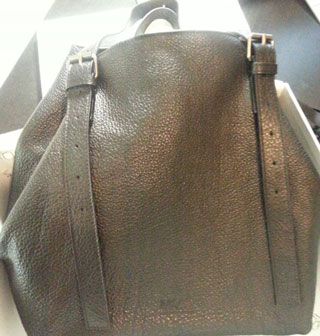
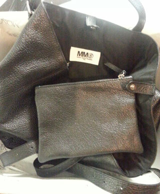
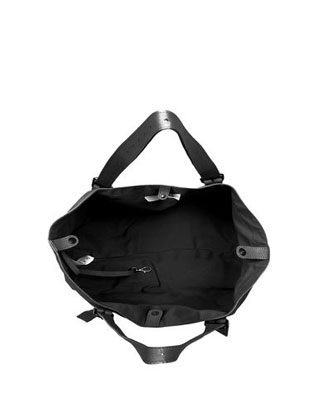
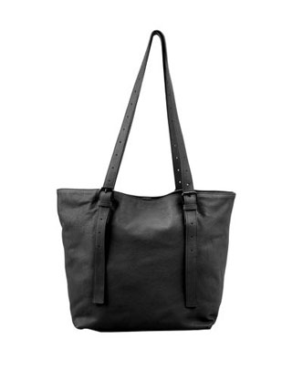
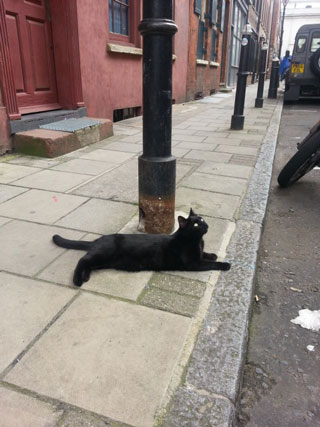
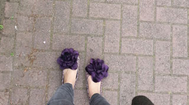
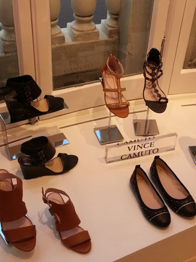
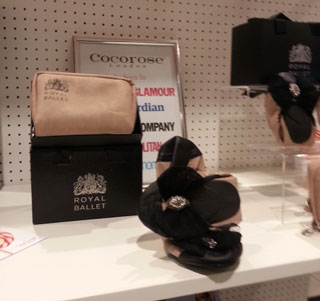

최근 스스로 생각해도 정말 열심히 놀고
열심히도 질렀다 ㅡㅡ;;;
내가 원래 일케 부지런한 사람이 아닌뎅 ㅜㅜ
바로 전 포스팅이 가방샀어요(것도2개;;;)에 이어서
또다시 하나를 집어왔다;;;
스스로 생각해도 헐;; 미쳤어 ㅡㅡ;; 란 생각이 들었지만
느므 내 맘에 들어서;;;; ☞☜;;;;;

MM6 Maison Martin Margiela
깜장가죽 쇼퍼백....일려나^^;;;
바로전에 가방은 네모네모해야해 어쩌구해놓고
민망하게시리 요래 흐물흐물 모양 안잡히는 가방을 사왔다^^;;
네모네모가방 맘에 드는걸로 주중 회사갈때 사용 / 주말외출용 하나씩
쟁였으니 이제 반대되는걸 사야하는 그런거 아니겠숩니꽈(←;;;)
Fenwick은 잘 안가는데
어쩌다 한번 가면 일케 맘에쏙드는게 눈에보인다 ㅜㅜ
...라기보다 런던나들이는 참으로 위험합니다;;
이쁜게 계속나와 ㅜㅜ

우선 결과는 대만족 +_+
먼옛날 MM6옷 함 피팅룸에서 입어보고
정말 극악으로 안어울려서;;;;
이 브랜드는 나랑 안맞는고만 ㅡㅡ;;;
이러고 관심조차 없었는데 또 이래 가방을 사게될줄은;;;;;;
주말에 읽을책 + 스카프 + 지갑등 마구잡이로 넣어서
들고댕겨도 무진장 편하고 가볍다
가방은 우선 가벼워야해 ㅜㅜ
안에들은 쪼매난 보조가방도 귀여움 ㅎㅎ
아마 내가 '모양 네모로 안잡히는 큰가방' 을
별로 안좋아하게 된 계기는
중고딩때 무식하게 가방을 무겁게 들고다닌거
(노트만들기 싫다고 모든필기를 악착같이 교과서에 다하고
그걸 매일같이 지고다닌 미련한 인간;;; ㅡㅡ;;)
+
어느순간 무거운거 들고다니는게 넘 힘들고 피곤해서
반대작용으로 작고 모양딱 잡힌 네모가방만 찾아 댕긴거 같은데
이제 맘에드는 네모네모를 찾아놓으니까
또다시 네모아닌가방에 관심이가는건가 라고
스스로 생각을 해봅니다 ㅡㅡ;
이런청개구리가 있나;;;;;
제대로 잘 나온 제품사진은 요기↓
출저는 MM6공홈

안에 요래 똑딱이(?)단추가 있어서

요렇게 둥근모양이랑

네모네모로 만들수있는데
이건 또 웃기게 네모네모보다 위에모양잡힌게 더 맘에들어 ㅡㅡ;;;
+ 5월8일부터 18일까지
공연 6개를 몰아봤다 ㅡㅡ;;;
왜 이나라는 관람객이 먼저 지치는가;;
봐도봐도 새로운게 또나와;;;;
일요일날 대망의 NIN공연을 끝으로
어제오늘 겔겔거리는중^^;;
8일 호러즈 HMV소규모 라이브
CD에 사인받았다 만세!!
10일 김제동 무료강연 골드스미스대학
프로는 프로 잘하더라~완전 깔깔웃고왔음
12일 Southway공연 / 유툽에서 즐겨보던 두곡 들었다 만세!!
15일 리틀드래곤 @킹스턴 / 다시는 평일에 이런 무식한짓 안할거야 ㅜㅜ
16일 CATS @윔블던 / 쵸딩무셔워 ㅜㅜ 오랜만에 헬게이트 활짝
18일 NIN @버밍험 / NIN! NIN! NIN! 오랜만에 뛰놀았더니 힘들어 ㅜㅜ
쪼~~금 더 자세한 후기는 여기에:
그리고 최근 미니LP에 관심이가는중^^;;;;
+

브릭레인 나들이중 발견한 고양이
쓰다듬어도 얌전해 ㅜㅜ 귀여워 ㅜㅜ

날 따닷해져서 Irregular Choice 신고나갔다
일명 왕꽃신발
근데 이거 안편해 ㅜㅜ 발아파 ㅜㅜ
+
런던나들이의 위험함2

이것도 Fenwick서 찾은 브랜드
왼쪽위 깜장샌들이 내취향 +_+
VINCE CAMUTO란 브랜드란다

이건 로얄발레와 콜라보한 Cocorose 플랫
앨리스인원더랜드 테마로 신발상자마져 이뻤다 ㅜㅜ
플랫은 엔간해서 구매안하는데
구경하는건 참으로 좋구만용///
+
패뷰밸 눈팅하다가 완전터진 짤방
젤 밑에 사진 ㅋㅋㅋㅋ
지금 제가 그래요 ㅜㅜ ㅋㅋㅋㅋㅋ